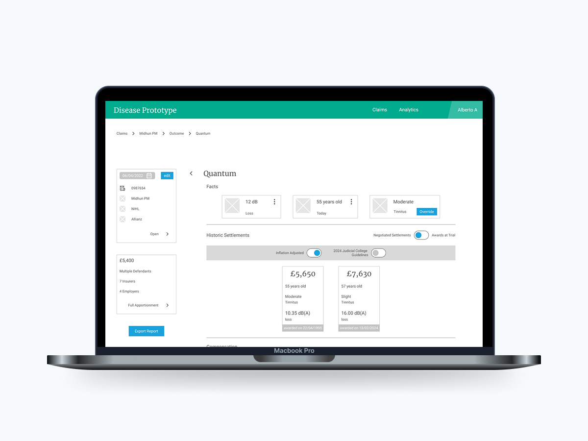

In context Interview
Try endpoint live modules
DISCOVER DEFINE DEVELOP DELIVER
The problem -
JP Morgan Chase offers their merchant customers, several digital services for treasury, payment gateway, fraud protection, etc. Each solution had their documentation on .pdf files on different websites requiring authentication.
What if JP Morgan had a single portal for all documentation accessible, searchable in search engines and able to try their technology?
The solution -
Public try endpoint and copy code samples feature for developers exploring and maintaining JP Morgan solutions and integrations.
The approach -
Brining concepts from analog industries to loans and adapting them to the repayments business context.
Tools used
In context Interview
Journey Map
User Persona
Insights
Deliverables
Owned the backlog, prototypes, charts for models.
